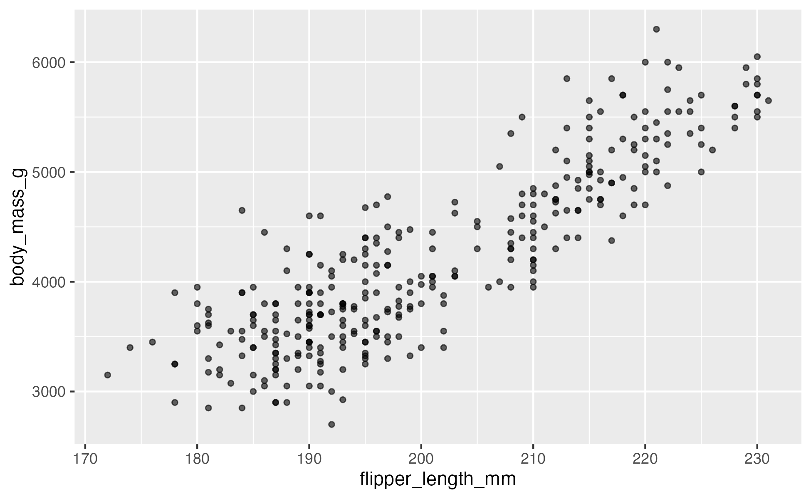
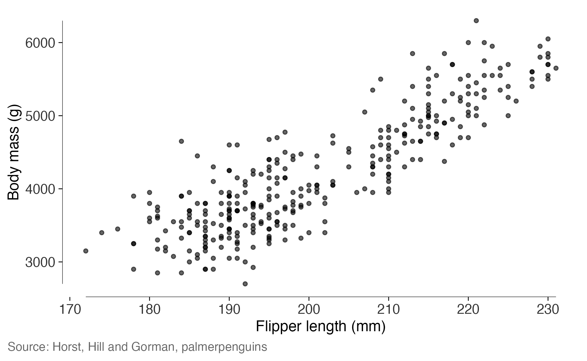
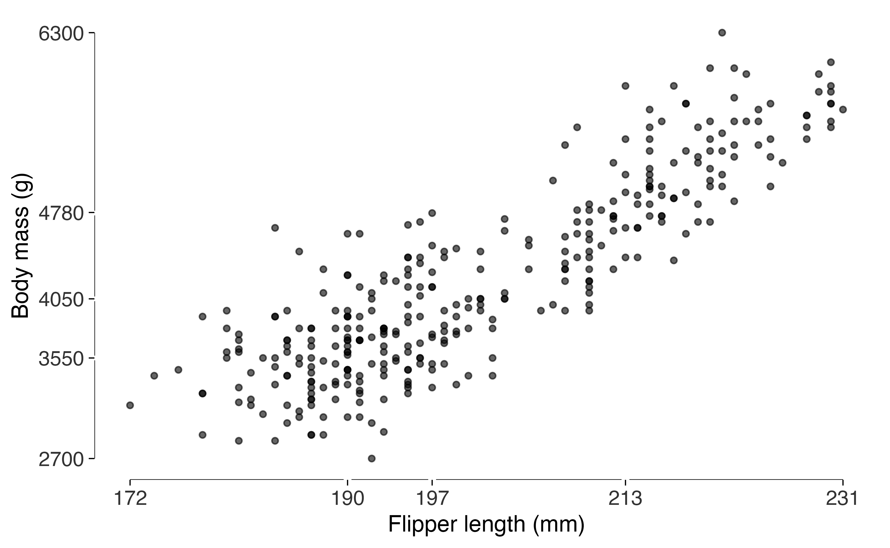
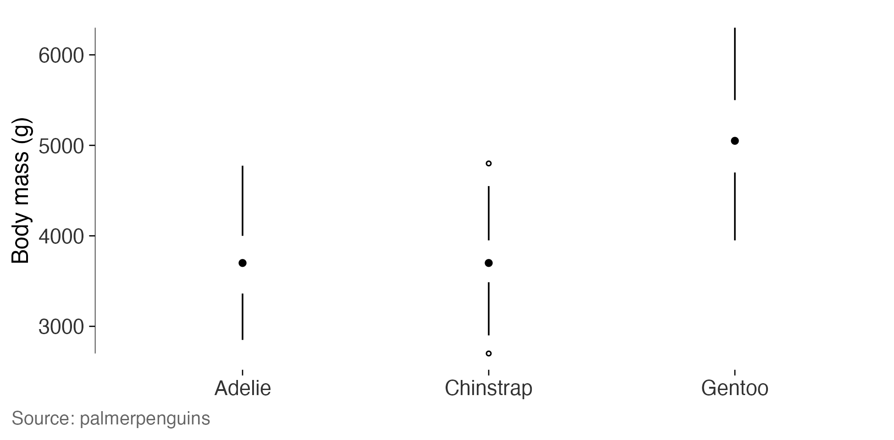
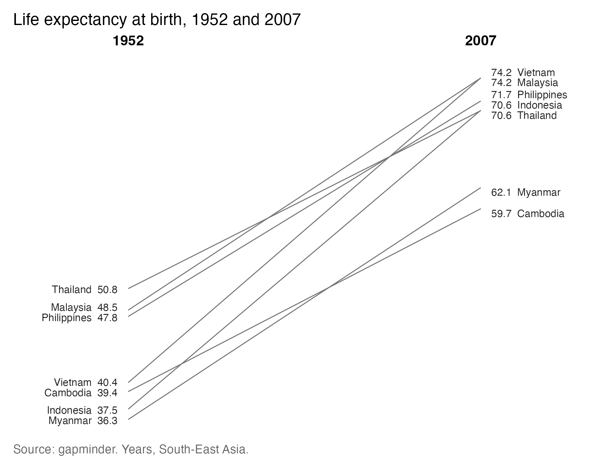
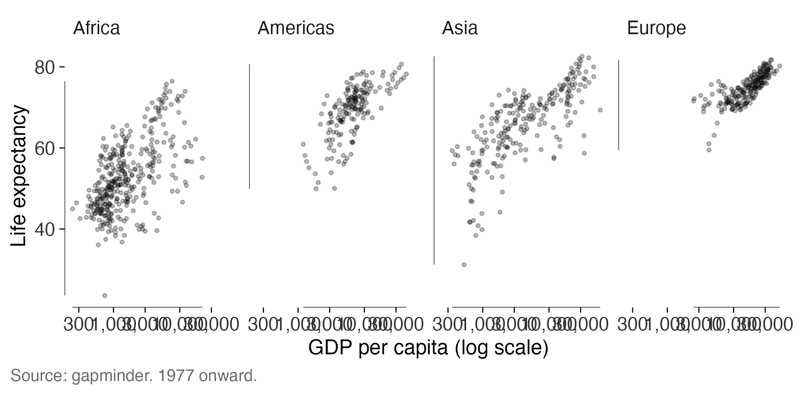
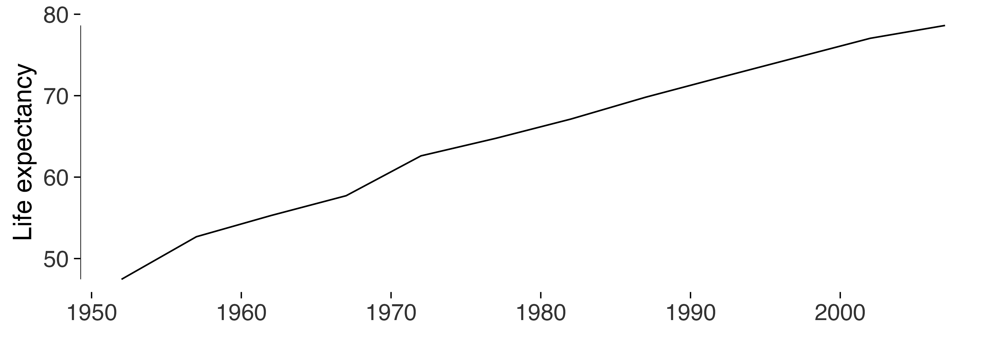
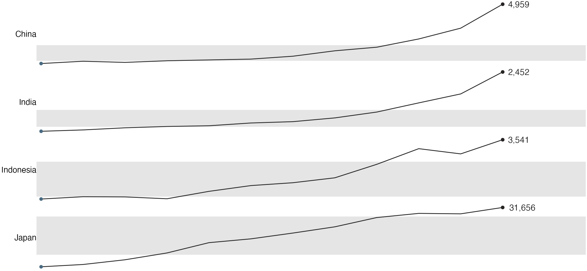
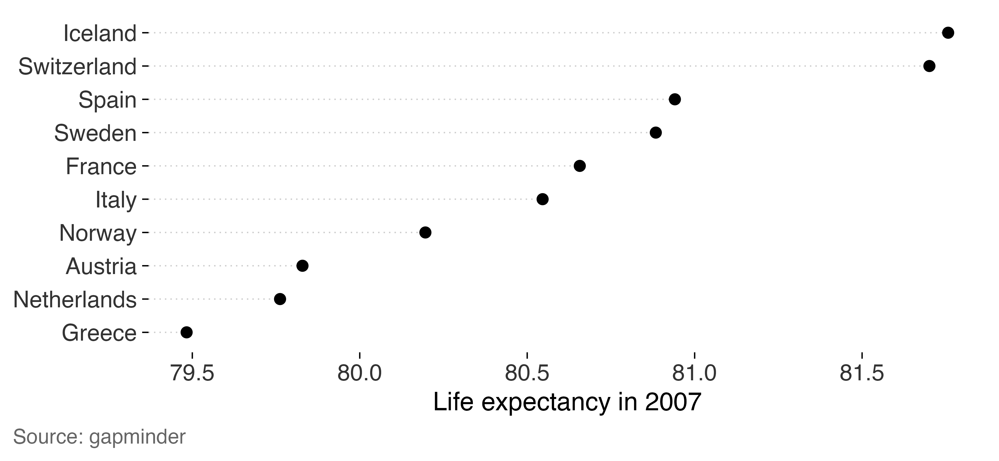

Here I use two datasets available in R packages.
gapminder contains life expectancy, income and population
for 142 countries at five-year intervals from 1952 to 2007.
palmerpenguins contains measurements of 344 penguins from
three islands in the Palmer Archipelago.
These examples show where the plotting tools help and where the data call for a different choice. The page uses the installed datasets and doesn’t download them during the build.
library(gapminder)
library(palmerpenguins)
#>
#> Attaching package: 'palmerpenguins'
#> The following objects are masked from 'package:datasets':
#>
#> penguins, penguins_raw
gap <- as.data.frame(gapminder)
peng <- as.data.frame(penguins[complete.cases(penguins), ])
dim(gap)
#> [1] 1704 6
dim(peng)
#> [1] 333 8Start with what ggplot2 gives you
default <- ggplot(peng, aes(flipper_length_mm, body_mass_g)) +
geom_point(alpha = 0.6, size = 1.2)
default
r_default <- data_ink_ratio(default)
r_default
#>
#> ── Data-ink ratio
#> 21% of the ink in this figure varies with the data.
#> • data ink: 9822 pixel-equivalents
#> • non-data ink: 36512
#> • measured at 6.5in x 4in, 150 dpiThe panel background and grid account for much of the estimated non-data ink in this version.
Erase, then replace the frame
I’ll remove those elements with theme_tufte() and add a
range frame. The new axis lines show the smallest and largest observed
values.
lean <- default +
geom_rangeframe() +
labs(x = "Flipper length (mm)", y = "Body mass (g)") +
theme_tufte() +
label_source("Horst, Hill and Gorman, palmerpenguins")
lean
r_lean <- data_ink_ratio(lean)
r_lean
#>
#> ── Data-ink ratio
#> 71% of the ink in this figure varies with the data.
#> • data ink: 11976 pixel-equivalents
#> • non-data ink: 4854
#> • measured at 6.5in x 4in, 150 dpiThe estimated data-ink share is now 3.4 times the original share. Both plots use the same 333 complete observations.
A quartile frame, and where it stops working
A quartile frame marks the five-number summary.
quartile_breaks() places the axis labels at those
values.
ggplot(peng, aes(flipper_length_mm, body_mass_g)) +
geom_point(alpha = 0.6, size = 1.2) +
geom_quartileframe() +
scale_x_continuous(breaks = quartile_breaks(peng$flipper_length_mm)) +
scale_y_continuous(breaks = quartile_breaks(peng$body_mass_g)) +
labs(x = "Flipper length (mm)", y = "Body mass (g)") +
theme_tufte()
The five labels fit here. With a skewed distribution, several can end up close together. I’d use a plain range frame if the quartile labels became hard to read.
Distributions: the box plot with the box erased
ggplot(peng, aes(species, body_mass_g)) +
geom_tufteboxplot() +
geom_rangeframe(sides = "l") +
labs(x = NULL, y = "Body mass (g)") +
theme_tufte() +
label_source("palmerpenguins")
Gentoo penguins are heavier on average than the other two species, whose distributions overlap substantially. The median dots and whiskers make that comparison visible.
Slopegraphs: changes in life expectancy
Here’s life expectancy in seven South-East Asian countries in 1952 and 2007. The values are printed at both ends of each line.
picked <- c("Cambodia", "Indonesia", "Malaysia", "Philippines",
"Thailand", "Vietnam", "Myanmar")
sea <- subset(gap, country %in% picked & year %in% c(1952, 2007))
sea$year <- factor(sea$year)
slopegraph(sea, year, lifeExp, country, accuracy = 0.1) +
labs(title = "Life expectancy at birth, 1952 and 2007") +
label_source("gapminder", note = "Years, South-East Asia.")
Life expectancy increased in every country shown. The lines also help us see changes in rank: Thailand starts highest and ends fifth, while Vietnam moves from fourth to roughly level with Malaysia at the top. Cambodia ends lowest.
Small multiples
For the next comparison, I’ll keep the same scales across panels.
facet_tufte() does that by default and warns if you request
free scales.
recent <- subset(gap, year >= 1977 & continent != "Oceania")
ggplot(recent, aes(gdpPercap, lifeExp)) +
geom_point(alpha = 0.25, size = 0.7) +
geom_rangeframe() +
facet_tufte(~ continent, ncol = 4) +
scale_x_log10(breaks = c(1000, 10000), labels = c("1,000", "10,000")) +
labs(x = "GDP per capita (log scale)", y = "Life expectancy") +
theme_tufte() +
label_source("gapminder", note = "1977 onward.")
Banking: how tall should the panel be?
The apparent steepness of a trend depends on the panel’s height. Here
I use bank_to_45() to suggest a height for one country’s
life-expectancy series. It applies Cleveland’s approach to bringing the
median absolute slope near 45 degrees.
korea <- subset(gap, country == "Korea, Rep.")
series <- ggplot(korea, aes(year, lifeExp)) +
geom_line(linewidth = 0.35) +
geom_rangeframe(sides = "l") +
labs(x = NULL, y = "Life expectancy") +
theme_tufte()
bank_to_45(series, width = 6.5)
#>
#> ── Banking to 45 degrees
#> Aspect ratio 1.169 (height / width), from 11 segments by "median_slope".
#> At 6.5in wide, that's a panel 7.6in tall. Allow more for axis labels and
#> titles.The suggested height describes the panel. Leave additional space for
titles and axis labels, then run check_labels_fit() at the
intended export size.
series
Sparklines, when each series has its own scale
four <- subset(gap, country %in% c("China", "India", "Japan", "Indonesia"))
sparklines(four, year, gdpPercap, country, accuracy = 1)
These four series have very different levels. Giving each its own scale makes the patterns easier to see, but it prevents direct comparisons of height across series. Use the fixed-scale panels above when levels are the question.
Dot plots, when zero is a long way away
top <- subset(gap, year == 2007 & continent == "Europe")
top <- head(top[order(-top$lifeExp), ], 10)
ggplot(top, aes(lifeExp, stats::reorder(country, lifeExp))) +
geom_cleveland_dot() +
labs(x = "Life expectancy in 2007", y = NULL) +
theme_tufte() +
label_source("gapminder")
The ten values range from 79.5 to 81.8 years. Bars starting at zero
make the differences hard to see. Cropping those bars makes their
lengths misleading. Here’s what lie_factor() reports for
the cropped version.
bars <- ggplot(top, aes(stats::reorder(country, lifeExp), lifeExp)) + geom_col()
c(from_zero = lie_factor(bars),
cropped = lie_factor(bars + coord_cartesian(ylim = c(79, 82))))
#> from_zero cropped
#> 1.0000 125.5656Dots show values by position, so they’re useful for this comparison on an axis that excludes zero.
Auditing the result
tufte_audit(lean, width = 6.5, height = 4)
#>
#> ── Tufte audit ──
#>
#> At 6.5in x 4in: 0 stated criteria not met.
#>
#> ── Measured, not graded
#> Tufte states a direction for these rather than a threshold. Read them against
#> another draft of the same figure.
#> • Data-ink ratio 0.71: an estimated 71% of the ink comes from data layers.
#> Compare drafts at the same dimensions; there's no target value.
#> • Data density 36.3 entries per square inch: 666 estimated entries over 18.3
#> square inches. Read this alongside the figure and entry count.
#> • 1 distinct colour in use. This is a count, not a verdict on whether the
#> colours help readers.
#> • One series in one panel. There's no series grouping to separate into small
#> multiples.
#>
#> ── Met
#> • Panel carries no background fill
#> • No minor gridlines
#> • No full panel border
#> • No pie chart
#> • Lie factor within Tufte's band
#> • No legend to decode
#> • No variable encoded twice
#> • The figure names its source
#> • Wider than it is tall
#> • Ink clears the WCAG contrast minimum
#> • Measured labels fit at the printed sizeA whole paper at once
figures <- list(
`fig 1 penguins` = lean,
`fig 2 species` = ggplot(peng, aes(species, body_mass_g)) +
geom_tufteboxplot() + geom_rangeframe(sides = "l") +
theme_tufte() + label_source("palmerpenguins"),
`fig 3 cropped` = bars + coord_cartesian(ylim = c(79, 81))
)
audit_figures(figures, measure = FALSE)
#>
#> ── Tufte audit: 3 figures ──
#>
#> ── Stated criteria not met, most first
#> fig 3 cropped (5 not met)
#> Panel carries no background fill, No minor gridlines, Bars measured from zero,
#> Lie factor within Tufte's band, The figure names its source
#>
#> ── No failures among completed checks
#> • fig 1 penguins
#> • fig 2 species
#>
#> ℹ Full detail for any one figure: `attr(x, "audits")[["<name>"]]`The cropped bar chart appears first because it has the most unmet criteria. That’s a useful place to begin reviewing these figures. Also check whether any audit steps were skipped.